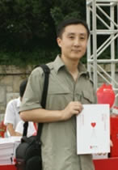

 |
具有较高的专业度和敬业精神。在部门人力较少的情况下，在部门负责人的指导和帮助下，按照公司要求高标准的开展了制度建设、品牌形象及广告传播、新闻及媒体关系维护、信息发布管理、公益活动策划执行、VI审核、企业文化、总公司及分公司开业典礼等工作，一人兼任了品牌相关多个岗位的多项工作。
在公司进入2010年后能继续保持公司筹建期的创业精神，不计得失，以很高的工作热情参与并完成了公司2010年工作会议的筹办和执行、部门预算的编制、部门及机构2010年度品宣计划的编制等重要工作。
随着公司的发展和机构的增多，积极加强对机构工作的支持，通过对机构人员进行品牌知识培训，以及在品宣计划和预算、VI、新闻、广告、宣传品等多方面工作提供资料支援和耐心细致的指导，帮助机构品宣人员迅速提高工作技能、统一品牌思路，使百年品牌工作在各机构科学有序的开展。
同时，在工作中能够结合自身的工作经验以及业内的先进做法，根据公司发展情况积极与部门负责人进行沟通研讨，对公司的品牌工作提出诸多良好建议。积极与个险等业务线沟通，了解业务线的进展和需求，并在产品上市推广方面提供积极支持。
具有较强的服务意识，能够换位思考，为其他部门和分公司的需求提供热情、专业、高效的解答和帮助。
|
|
|